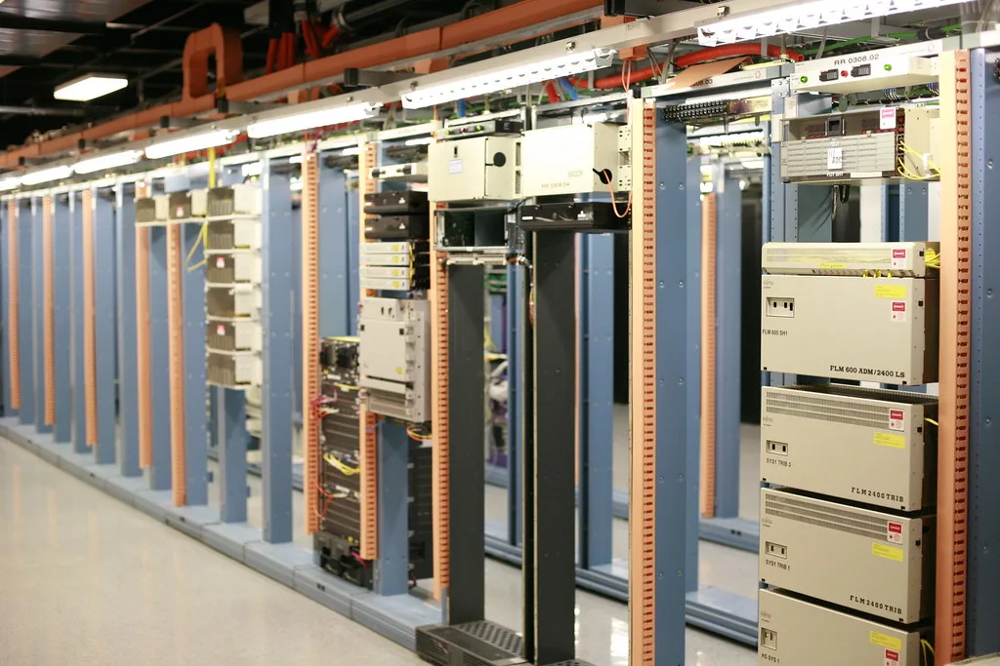

SK하이닉스가 1일부로 사장급 인사를 시행하며 조직 개편을 마무리했다. 핵심은 미국 현지에 사장급 조직인 '미주총괄'을 새로 만들고, 고대역폭메모리(HBM) 개발을 이끌어온 안현 개발총괄(CDO) 사장을 이 자리에 앉힌 것이다. 급변하는 글로벌 AI 반도체 시장에 대응하고 미래 기술 경쟁력을 확보하기 위한 선제적 포석이라는 설명이다. 미주총괄은 빅테크 고객이 몰려 있는 현지에서 사업과 기술 리더십을 동시에 쥐는 자리로 신설돼, 이번 인사에서 가장 눈에 띄는 변화로 꼽힌다.
안현 사장은 HBM과 SOC AMM 등 AI 메모리 개발을 주도해온 인물로, 사업·전략 경험과 글로벌 역량을 두루 갖췄다는 평가를 받아왔다. 그가 미주총괄로 자리를 옮기면서 현지 빅테크 고객 중심의 대응 체계를 구축하고, 기술 리더십과 연구개발(R&D) 역량을 한층 강화하는 역할을 맡게 됐다. HBM 시장에서 주도권을 잡아온 주역을 아예 고객과 가장 가까운 현지로 전진 배치했다는 점에서, 회사가 미국 시장 공략에 얼마나 무게를 두고 있는지 가늠할 수 있다. 엔비디아를 비롯한 미국 빅테크들이 차세대 AI 가속기용 메모리 물량을 선점하려 경쟁하는 상황에서, 개발 총괄을 지냈던 인물을 현지 사령탑으로 보낸 것은 기술과 영업을 동시에 틀어쥐겠다는 포석으로 읽힌다.

안 사장이 맡던 개발총괄 자리는 차선용 사장이 겸임한다. 차 사장은 2022년부터 미래기술연구원장을 맡아 D램과 낸드의 기술적 한계를 돌파하기 위한 혁신을 주도해왔고, 지난해 10월 인사에서 부사장에서 사장으로 승진한 바 있다. 미래 기술 연구와 차세대 AI 메모리 개발을 함께 짊어지게 된 만큼, 연구와 제품화 사이의 시너지를 끌어올리는 역할이 기대된다.
또 다른 변화는 윤풍영 SK 수펙스추구협의회 사장이 SK하이닉스의 코퍼레이트센터 총괄사장으로 합류한 점이다. 윤 사장은 SK그룹에서 전략·투자·사업개발과 AI 전환(AX) 분야 경험을 쌓은 전략통으로 분류된다. 지난 7월부터 SK하이닉스 글로벌성장TF 수장을 맡아온 터라, 이번 합류는 이미 예정된 수순이었다는 평가도 나온다. 그는 회사의 글로벌 사업 확장과 신성장 동력 발굴을 이끌 것으로 전해진다.

업계에서는 이번 인사를 두고 SK하이닉스가 HBM으로 구축한 성공 방정식을 다음 단계로 확장하려는 포석이라는 해석이 나온다. 개발·현지 사업·그룹 전략을 각각 책임질 세 명의 사장을 전진 배치함으로써, 기술 리더십은 유지하면서도 미국 빅테크 고객과의 접점을 넓히려는 의도가 읽힌다는 것이다. 최태원 SK 회장이 반도체와 그룹의 미래 전략을 함께 그릴 인물로 이들을 지목했다는 평가도 나오는 배경이다.
SK하이닉스는 이미 글로벌 주요 고객사 14곳과 장기공급계약(LTA)을 맺어 2027~2028년 전체 생산능력의 50% 이상을 확보해 둔 상태다. 이번 조직 개편으로 미국 현지 대응력을 한층 끌어올리면서, AI 메모리 수요 확대에 맞춰 공급과 기술 개발 양쪽에서 속도를 내겠다는 전략으로 풀이된다. 메모리 업계에서는 공급 부족이 한동안 이어질 것이라는 전망이 우세한 가운데, 이번 인사가 고객과의 접점을 현지화해 장기계약 이행과 차세대 제품 공동개발을 동시에 끌고 가려는 포석이라는 분석도 나온다.